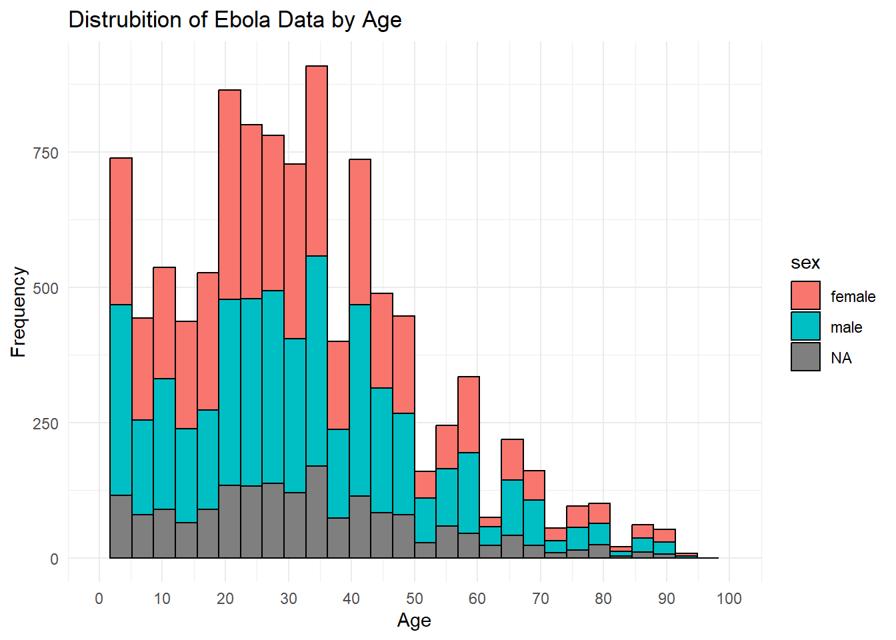
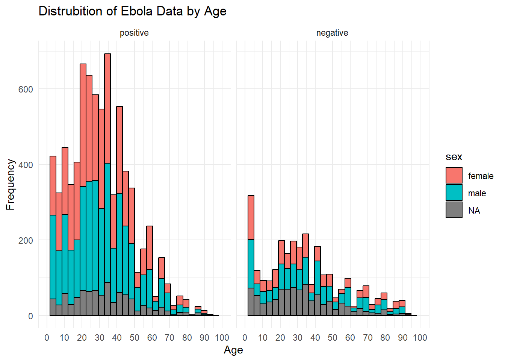
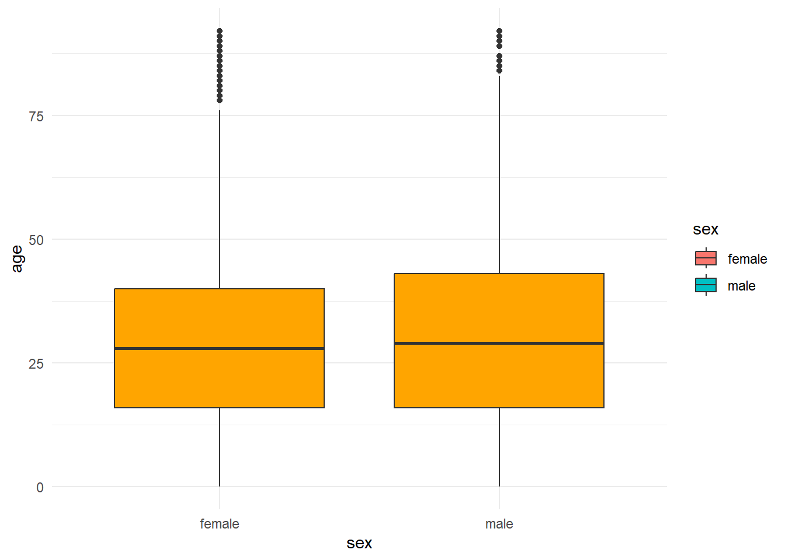
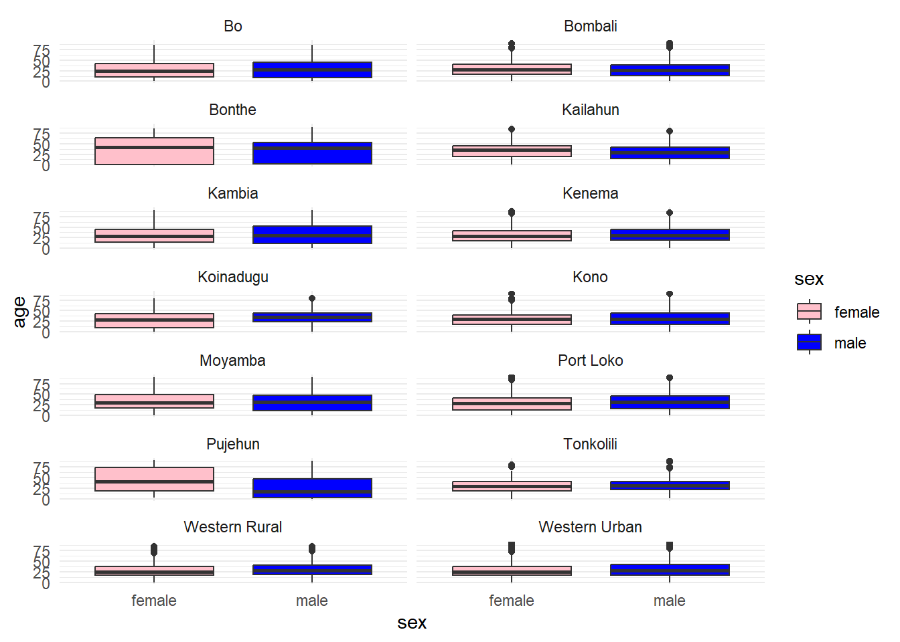
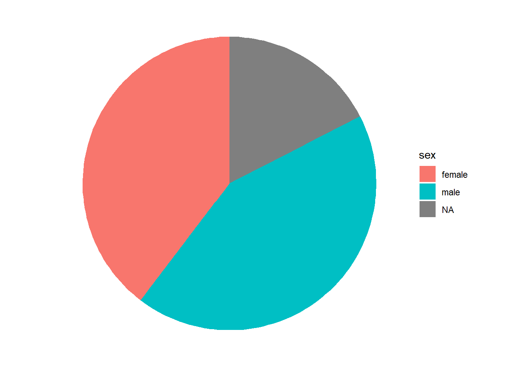
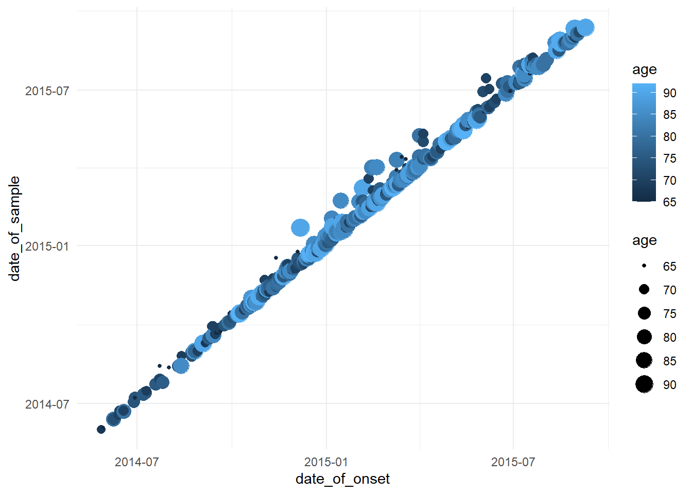
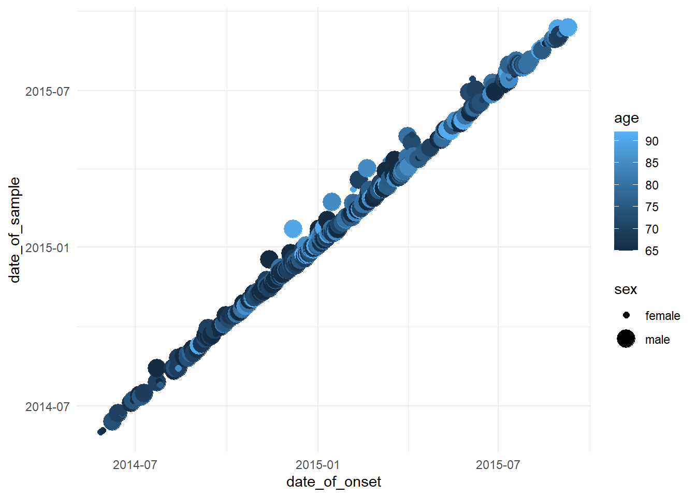

Code
library(tidyverse)
library(readxl) #library(haven)
library(gt)
library(epiR)
theme_set(theme_minimal())library(tidyverse)
library(readxl) #library(haven)
library(gt)
library(epiR)
theme_set(theme_minimal())ebola_data_raw <- read_xlsx('Ebola_Sierra Leone.xlsx')
ebola_data_raw# A tibble: 11,903 × 8
id age sex status date_of_onset date_of_sample district
<dbl> <dbl> <dbl> <dbl> <dttm> <dttm> <chr>
1 1 20 1 1 2014-05-18 00:00:00 2014-05-23 00:00:00 Kailahun
2 2 42 1 1 2014-05-20 00:00:00 2014-05-25 00:00:00 Kailahun
3 3 45 1 1 2014-05-20 00:00:00 2014-05-25 00:00:00 Kailahun
4 4 15 1 1 2014-05-21 00:00:00 2014-05-26 00:00:00 Kailahun
5 5 19 1 1 2014-05-21 00:00:00 2014-05-26 00:00:00 Kailahun
6 6 55 1 1 2014-05-21 00:00:00 2014-05-26 00:00:00 Kailahun
7 7 50 1 1 2014-05-21 00:00:00 2014-05-26 00:00:00 Kailahun
8 8 8 1 1 2014-05-22 00:00:00 2014-05-27 00:00:00 Kailahun
9 9 54 1 1 2014-05-22 00:00:00 2014-05-27 00:00:00 Kailahun
10 10 57 1 1 2014-05-22 00:00:00 2014-05-27 00:00:00 Kailahun
# ℹ 11,893 more rows
# ℹ 1 more variable: chiefdom <chr>ebola_data_fm_np <- ebola_data_raw %>%
mutate(
sex = factor(sex,
levels = c(1,2),
labels = c("female", "male")),
status = factor(status,
levels = c(0,1),
labels = c("negative", "positive") ), # Convert to factor
# Create 'age_group' based on the 'age' column
age_group = case_when(
age < 5 ~ "0-4",
age >= 5 & age < 15 ~ "5-14",
age >= 15 & age < 25 ~ "15-24",
age >= 25 & age < 45 ~ "25-44",
age >= 45 & age < 65 ~ "45-64",
age >= 65 ~ "65+",
TRUE ~ NA_character_ # Handle missing values by assigning NA
),
# Convert 'age_group' to factor with specified order
age_group = factor(age_group, levels = c("0-4", "5-14", "15-24", "25-44", "45-64", "65+"))
)
ebola_data_fm_np# A tibble: 11,903 × 9
id age sex status date_of_onset date_of_sample district
<dbl> <dbl> <fct> <fct> <dttm> <dttm> <chr>
1 1 20 female positive 2014-05-18 00:00:00 2014-05-23 00:00:00 Kailahun
2 2 42 female positive 2014-05-20 00:00:00 2014-05-25 00:00:00 Kailahun
3 3 45 female positive 2014-05-20 00:00:00 2014-05-25 00:00:00 Kailahun
4 4 15 female positive 2014-05-21 00:00:00 2014-05-26 00:00:00 Kailahun
5 5 19 female positive 2014-05-21 00:00:00 2014-05-26 00:00:00 Kailahun
6 6 55 female positive 2014-05-21 00:00:00 2014-05-26 00:00:00 Kailahun
7 7 50 female positive 2014-05-21 00:00:00 2014-05-26 00:00:00 Kailahun
8 8 8 female positive 2014-05-22 00:00:00 2014-05-27 00:00:00 Kailahun
9 9 54 female positive 2014-05-22 00:00:00 2014-05-27 00:00:00 Kailahun
10 10 57 female positive 2014-05-22 00:00:00 2014-05-27 00:00:00 Kailahun
# ℹ 11,893 more rows
# ℹ 2 more variables: chiefdom <chr>, age_group <fct>ebola_data_fm_pn <- ebola_data_raw %>%
mutate(
sex = factor(sex,
levels = c(1,2),
labels = c("female", "male")),
status = factor(status,
levels = c(1,0),
labels = c("positive", "negative") ), # Convert to factor
# Create 'age_group' based on the 'age' column
age_group = case_when(
age < 5 ~ "0-4",
age >= 5 & age < 15 ~ "5-14",
age >= 15 & age < 25 ~ "15-24",
age >= 25 & age < 45 ~ "25-44",
age >= 45 & age < 65 ~ "45-64",
age >= 65 ~ "65+",
TRUE ~ NA_character_ # Handle missing values by assigning NA
),
# Convert 'age_group' to factor with specified order
age_group = factor(age_group, levels = c("0-4", "5-14", "15-24", "25-44", "45-64", "65+"))
)
ebola_data_fm_pn# A tibble: 11,903 × 9
id age sex status date_of_onset date_of_sample district
<dbl> <dbl> <fct> <fct> <dttm> <dttm> <chr>
1 1 20 female positive 2014-05-18 00:00:00 2014-05-23 00:00:00 Kailahun
2 2 42 female positive 2014-05-20 00:00:00 2014-05-25 00:00:00 Kailahun
3 3 45 female positive 2014-05-20 00:00:00 2014-05-25 00:00:00 Kailahun
4 4 15 female positive 2014-05-21 00:00:00 2014-05-26 00:00:00 Kailahun
5 5 19 female positive 2014-05-21 00:00:00 2014-05-26 00:00:00 Kailahun
6 6 55 female positive 2014-05-21 00:00:00 2014-05-26 00:00:00 Kailahun
7 7 50 female positive 2014-05-21 00:00:00 2014-05-26 00:00:00 Kailahun
8 8 8 female positive 2014-05-22 00:00:00 2014-05-27 00:00:00 Kailahun
9 9 54 female positive 2014-05-22 00:00:00 2014-05-27 00:00:00 Kailahun
10 10 57 female positive 2014-05-22 00:00:00 2014-05-27 00:00:00 Kailahun
# ℹ 11,893 more rows
# ℹ 2 more variables: chiefdom <chr>, age_group <fct>ebola_data_mf_np <- ebola_data_raw %>%
mutate(
sex = factor(sex,
levels = c(2,1),
labels = c("male", "female")),
status = factor(status,
levels = c(0,1),
labels = c("negative", "positive") ), # Convert to factor
# Create 'age_group' based on the 'age' column
age_group = case_when(
age < 5 ~ "0-4",
age >= 5 & age < 15 ~ "5-14",
age >= 15 & age < 25 ~ "15-24",
age >= 25 & age < 45 ~ "25-44",
age >= 45 & age < 65 ~ "45-64",
age >= 65 ~ "65+",
TRUE ~ NA_character_ # Handle missing values by assigning NA
),
# Convert 'age_group' to factor with specified order
age_group = factor(age_group, levels = c("0-4", "5-14", "15-24", "25-44", "45-64", "65+"))
)
ebola_data_mf_np# A tibble: 11,903 × 9
id age sex status date_of_onset date_of_sample district
<dbl> <dbl> <fct> <fct> <dttm> <dttm> <chr>
1 1 20 female positive 2014-05-18 00:00:00 2014-05-23 00:00:00 Kailahun
2 2 42 female positive 2014-05-20 00:00:00 2014-05-25 00:00:00 Kailahun
3 3 45 female positive 2014-05-20 00:00:00 2014-05-25 00:00:00 Kailahun
4 4 15 female positive 2014-05-21 00:00:00 2014-05-26 00:00:00 Kailahun
5 5 19 female positive 2014-05-21 00:00:00 2014-05-26 00:00:00 Kailahun
6 6 55 female positive 2014-05-21 00:00:00 2014-05-26 00:00:00 Kailahun
7 7 50 female positive 2014-05-21 00:00:00 2014-05-26 00:00:00 Kailahun
8 8 8 female positive 2014-05-22 00:00:00 2014-05-27 00:00:00 Kailahun
9 9 54 female positive 2014-05-22 00:00:00 2014-05-27 00:00:00 Kailahun
10 10 57 female positive 2014-05-22 00:00:00 2014-05-27 00:00:00 Kailahun
# ℹ 11,893 more rows
# ℹ 2 more variables: chiefdom <chr>, age_group <fct>ebola_data_mf_pn <- ebola_data_raw %>%
mutate(
sex = factor(sex,
levels = c(2,1),
labels = c("male", "female")),
status = factor(status,
levels = c(1,0),
labels = c("positive", "negative") ), # Convert to factor
# Create 'age_group' based on the 'age' column
age_group = case_when(
age < 5 ~ "0-4",
age >= 5 & age < 15 ~ "5-14",
age >= 15 & age < 25 ~ "15-24",
age >= 25 & age < 45 ~ "25-44",
age >= 45 & age < 65 ~ "45-64",
age >= 65 ~ "65+",
TRUE ~ NA_character_ # Handle missing values by assigning NA
),
# Convert 'age_group' to factor with specified order
age_group = factor(age_group, levels = c("0-4", "5-14", "15-24", "25-44", "45-64", "65+"))
)
ebola_data_mf_pn# A tibble: 11,903 × 9
id age sex status date_of_onset date_of_sample district
<dbl> <dbl> <fct> <fct> <dttm> <dttm> <chr>
1 1 20 female positive 2014-05-18 00:00:00 2014-05-23 00:00:00 Kailahun
2 2 42 female positive 2014-05-20 00:00:00 2014-05-25 00:00:00 Kailahun
3 3 45 female positive 2014-05-20 00:00:00 2014-05-25 00:00:00 Kailahun
4 4 15 female positive 2014-05-21 00:00:00 2014-05-26 00:00:00 Kailahun
5 5 19 female positive 2014-05-21 00:00:00 2014-05-26 00:00:00 Kailahun
6 6 55 female positive 2014-05-21 00:00:00 2014-05-26 00:00:00 Kailahun
7 7 50 female positive 2014-05-21 00:00:00 2014-05-26 00:00:00 Kailahun
8 8 8 female positive 2014-05-22 00:00:00 2014-05-27 00:00:00 Kailahun
9 9 54 female positive 2014-05-22 00:00:00 2014-05-27 00:00:00 Kailahun
10 10 57 female positive 2014-05-22 00:00:00 2014-05-27 00:00:00 Kailahun
# ℹ 11,893 more rows
# ℹ 2 more variables: chiefdom <chr>, age_group <fct>contingency_table_fm_np <- table(ebola_data_fm_np$sex, ebola_data_fm_np$status)
contingency_table_fm_np
negative positive
female 1142 3577
male 1330 3779contingency_table_fm_pn <- table(ebola_data_fm_pn$sex, ebola_data_fm_pn$status)
contingency_table_fm_pn
positive negative
female 3577 1142
male 3779 1330contingency_table_mf_np <- table(ebola_data_mf_np$sex, ebola_data_mf_np$status)
contingency_table_mf_np
negative positive
male 1330 3779
female 1142 3577contingency_table_mf_pn <- table(ebola_data_mf_pn$sex, ebola_data_mf_pn$status)
contingency_table_mf_pn
positive negative
male 3779 1330
female 3577 1142chisq.test(contingency_table_fm_np)
Pearson's Chi-squared test with Yates' continuity correction
data: contingency_table_fm_np
X-squared = 4.2787, df = 1, p-value = 0.03859chisq.test(contingency_table_fm_pn)
Pearson's Chi-squared test with Yates' continuity correction
data: contingency_table_fm_pn
X-squared = 4.2787, df = 1, p-value = 0.03859chisq.test(contingency_table_mf_np)
Pearson's Chi-squared test with Yates' continuity correction
data: contingency_table_mf_np
X-squared = 4.2787, df = 1, p-value = 0.03859chisq.test(contingency_table_mf_pn)
Pearson's Chi-squared test with Yates' continuity correction
data: contingency_table_mf_pn
X-squared = 4.2787, df = 1, p-value = 0.03859epi.2by2(contingency_table_fm_np, method = 'case.control' ) Outcome + Outcome - Total Odds
Exposed + 1142 3577 4719 0.32 (0.30 to 0.34)
Exposed - 1330 3779 5109 0.35 (0.33 to 0.37)
Total 2472 7356 9828 0.34 (0.32 to 0.35)
Point estimates and 95% CIs:
-------------------------------------------------------------------
Exposure odds ratio 0.91 (0.83, 0.99)
Attrib fraction (est) in the exposed (%) -10.24 (-20.91, -0.51)
Attrib fraction (est) in the population (%) -4.73 (-9.30, -0.35)
-------------------------------------------------------------------
Uncorrected chi2 test that OR = 1: chi2(1) = 4.375 Pr>chi2 = 0.036
Fisher exact test that OR = 1: Pr>chi2 = 0.038
Wald confidence limits
CI: confidence intervalepi.2by2(contingency_table_fm_pn, method = 'case.control' ) Outcome + Outcome - Total Odds
Exposed + 3577 1142 4719 3.13 (2.93 to 3.35)
Exposed - 3779 1330 5109 2.84 (2.67 to 3.03)
Total 7356 2472 9828 2.98 (2.84 to 3.12)
Point estimates and 95% CIs:
-------------------------------------------------------------------
Exposure odds ratio 1.10 (1.01, 1.21)
Attrib fraction (est) in the exposed (%) 9.29 (0.51, 17.29)
Attrib fraction (est) in the population (%) 4.52 (0.34, 8.51)
-------------------------------------------------------------------
Uncorrected chi2 test that OR = 1: chi2(1) = 4.375 Pr>chi2 = 0.036
Fisher exact test that OR = 1: Pr>chi2 = 0.038
Wald confidence limits
CI: confidence intervalepi.2by2(contingency_table_mf_np, method = 'case.control' ) Outcome + Outcome - Total Odds
Exposed + 1330 3779 5109 0.35 (0.33 to 0.37)
Exposed - 1142 3577 4719 0.32 (0.30 to 0.34)
Total 2472 7356 9828 0.34 (0.32 to 0.35)
Point estimates and 95% CIs:
-------------------------------------------------------------------
Exposure odds ratio 1.10 (1.01, 1.21)
Attrib fraction (est) in the exposed (%) 9.29 (0.51, 17.29)
Attrib fraction (est) in the population (%) 5.00 (0.27, 9.50)
-------------------------------------------------------------------
Uncorrected chi2 test that OR = 1: chi2(1) = 4.375 Pr>chi2 = 0.036
Fisher exact test that OR = 1: Pr>chi2 = 0.038
Wald confidence limits
CI: confidence intervalepi.2by2(contingency_table_mf_pn, method = 'case.control' ) Outcome + Outcome - Total Odds
Exposed + 3779 1330 5109 2.84 (2.67 to 3.03)
Exposed - 3577 1142 4719 3.13 (2.93 to 3.35)
Total 7356 2472 9828 2.98 (2.84 to 3.12)
Point estimates and 95% CIs:
-------------------------------------------------------------------
Exposure odds ratio 0.91 (0.83, 0.99)
Attrib fraction (est) in the exposed (%) -10.24 (-20.91, -0.51)
Attrib fraction (est) in the population (%) -5.26 (-10.50, -0.27)
-------------------------------------------------------------------
Uncorrected chi2 test that OR = 1: chi2(1) = 4.375 Pr>chi2 = 0.036
Fisher exact test that OR = 1: Pr>chi2 = 0.038
Wald confidence limits
CI: confidence intervallogistic_model_fm_np <- glm(status ~ sex,
data = ebola_data_fm_np,
family = binomial)
# Print the logistic regression model summary
summary(logistic_model_fm_np)
Call:
glm(formula = status ~ sex, family = binomial, data = ebola_data_fm_np)
Coefficients:
Estimate Std. Error z value Pr(>|z|)
(Intercept) 1.14174 0.03399 33.592 <2e-16 ***
sexmale -0.09746 0.04660 -2.091 0.0365 *
---
Signif. codes: 0 '***' 0.001 '**' 0.01 '*' 0.05 '.' 0.1 ' ' 1
(Dispersion parameter for binomial family taken to be 1)
Null deviance: 11086 on 9827 degrees of freedom
Residual deviance: 11082 on 9826 degrees of freedom
(2075 observations deleted due to missingness)
AIC: 11086
Number of Fisher Scoring iterations: 4logistic_model_fm_pn <- glm(status ~ sex,
data = ebola_data_fm_pn,
family = binomial)
# Print the logistic regression model summary
summary(logistic_model_fm_pn)
Call:
glm(formula = status ~ sex, family = binomial, data = ebola_data_fm_pn)
Coefficients:
Estimate Std. Error z value Pr(>|z|)
(Intercept) -1.14174 0.03399 -33.592 <2e-16 ***
sexmale 0.09746 0.04660 2.091 0.0365 *
---
Signif. codes: 0 '***' 0.001 '**' 0.01 '*' 0.05 '.' 0.1 ' ' 1
(Dispersion parameter for binomial family taken to be 1)
Null deviance: 11086 on 9827 degrees of freedom
Residual deviance: 11082 on 9826 degrees of freedom
(2075 observations deleted due to missingness)
AIC: 11086
Number of Fisher Scoring iterations: 4logistic_model_mf_np <- glm(status ~ sex,
data = ebola_data_mf_np,
family = binomial)
# Print the logistic regression model summary
summary(logistic_model_mf_np)
Call:
glm(formula = status ~ sex, family = binomial, data = ebola_data_mf_np)
Coefficients:
Estimate Std. Error z value Pr(>|z|)
(Intercept) 1.04428 0.03188 32.754 <2e-16 ***
sexfemale 0.09746 0.04660 2.091 0.0365 *
---
Signif. codes: 0 '***' 0.001 '**' 0.01 '*' 0.05 '.' 0.1 ' ' 1
(Dispersion parameter for binomial family taken to be 1)
Null deviance: 11086 on 9827 degrees of freedom
Residual deviance: 11082 on 9826 degrees of freedom
(2075 observations deleted due to missingness)
AIC: 11086
Number of Fisher Scoring iterations: 4logistic_model_mf_pn <- glm(status ~ sex,
data = ebola_data_mf_pn,
family = binomial)
# Print the logistic regression model summary
summary(logistic_model_mf_pn)
Call:
glm(formula = status ~ sex, family = binomial, data = ebola_data_mf_pn)
Coefficients:
Estimate Std. Error z value Pr(>|z|)
(Intercept) -1.04428 0.03188 -32.754 <2e-16 ***
sexfemale -0.09746 0.04660 -2.091 0.0365 *
---
Signif. codes: 0 '***' 0.001 '**' 0.01 '*' 0.05 '.' 0.1 ' ' 1
(Dispersion parameter for binomial family taken to be 1)
Null deviance: 11086 on 9827 degrees of freedom
Residual deviance: 11082 on 9826 degrees of freedom
(2075 observations deleted due to missingness)
AIC: 11086
Number of Fisher Scoring iterations: 4ebola_data_fm_pn %>%
arrange(desc(age)) %>%
head()# A tibble: 6 × 9
id age sex status date_of_onset date_of_sample district
<dbl> <dbl> <fct> <fct> <dttm> <dttm> <chr>
1 3260 92 female positive 2014-10-09 00:00:00 2014-10-14 00:00:00 Western U…
2 7695 92 male positive 2014-12-17 00:00:00 2014-12-23 00:00:00 Western U…
3 7912 92 female positive 2014-12-21 00:00:00 2014-12-25 00:00:00 Western U…
4 10203 92 male negative 2015-03-07 00:00:00 2015-03-10 00:00:00 Western U…
5 10805 92 female negative 2015-04-28 00:00:00 2015-05-02 00:00:00 Port Loko
6 10946 92 female negative 2015-05-14 00:00:00 2015-05-17 00:00:00 Port Loko
# ℹ 2 more variables: chiefdom <chr>, age_group <fct>ebola_data_fm_pn %>%
drop_na(age) %>%
arrange(age) %>%
tail()# A tibble: 6 × 9
id age sex status date_of_onset date_of_sample district
<dbl> <dbl> <fct> <fct> <dttm> <dttm> <chr>
1 7912 92 female positive 2014-12-21 00:00:00 2014-12-25 00:00:00 Western U…
2 10203 92 male negative 2015-03-07 00:00:00 2015-03-10 00:00:00 Western U…
3 10805 92 female negative 2015-04-28 00:00:00 2015-05-02 00:00:00 Port Loko
4 10946 92 female negative 2015-05-14 00:00:00 2015-05-17 00:00:00 Port Loko
5 10948 92 female negative 2015-05-14 00:00:00 2015-05-16 00:00:00 Port Loko
6 11082 92 male negative 2015-05-27 00:00:00 2015-05-27 00:00:00 Western U…
# ℹ 2 more variables: chiefdom <chr>, age_group <fct>ebola_data_fm_pn %>%
summary() id age sex status
Min. : 1 Min. : 0.0 female:4719 positive:8358
1st Qu.: 2976 1st Qu.:16.0 male :5109 negative:3545
Median : 5952 Median :28.0 NA's :2075
Mean : 5952 Mean :30.3
3rd Qu.: 8928 3rd Qu.:42.0
Max. :11903 Max. :92.0
NA's :956
date_of_onset date_of_sample
Min. :2014-05-18 00:00:00.00 Min. :2014-05-23 00:00:00.00
1st Qu.:2014-10-05 00:00:00.00 1st Qu.:2014-10-12 00:00:00.00
Median :2014-11-18 00:00:00.00 Median :2014-11-24 00:00:00.00
Mean :2014-12-04 10:31:15.75 Mean :2014-12-10 03:31:28.16
3rd Qu.:2015-01-11 12:00:00.00 3rd Qu.:2015-01-16 00:00:00.00
Max. :2015-09-12 00:00:00.00 Max. :2015-09-13 00:00:00.00
district chiefdom age_group
Length:11903 Length:11903 0-4 :1120
Class :character Class :character 5-14 :1395
Mode :character Mode :character 15-24:1947
25-44:4015
45-64:1723
65+ : 747
NA's : 956 ebola_data_fm_pn$age %>%
summary() Min. 1st Qu. Median Mean 3rd Qu. Max. NA's
0.0 16.0 28.0 30.3 42.0 92.0 956 summary(ebola_data_fm_pn$age) Min. 1st Qu. Median Mean 3rd Qu. Max. NA's
0.0 16.0 28.0 30.3 42.0 92.0 956 ebola_data_fm_pn %>%
summarise( mean_age = mean(age, na.rm = TRUE),
median_age = median(age, na.rm =TRUE),
sd_age = sd(age, na.rm = TRUE),
min_age = min(age, na.rm = TRUE),
max_age = max(age, na.rm = TRUE))# A tibble: 1 × 5
mean_age median_age sd_age min_age max_age
<dbl> <dbl> <dbl> <dbl> <dbl>
1 30.3 28 19.7 0 92ebola_data_fm_pn %>%
summarize(count = n(),
age_years = sum(age, na.rm = TRUE))# A tibble: 1 × 2
count age_years
<int> <dbl>
1 11903 331720.ebola_data_fm_pn %>%
# group my data by district
group_by(district) %>%
summarize(count = n(),
max_age = max(age, na.rm = TRUE)
)# A tibble: 14 × 3
district count max_age
<chr> <int> <dbl>
1 Bo 606 87
2 Bombali 1190 91
3 Bonthe 84 90
4 Kailahun 570 85
5 Kambia 421 90
6 Kenema 780 87
7 Koinadugu 157 85
8 Kono 551 90
9 Moyamba 449 90
10 Port Loko 1701 92
11 Pujehun 124 91
12 Tonkolili 583 90
13 Western Rural 1522 90
14 Western Urban 3165 92ebola_data_fm_pn %>%
drop_na(sex) %>%
group_by(district, sex) %>%
summarise(count = n(),
max_age = max(age, na.rm = TRUE)) # %>% # A tibble: 28 × 4
# Groups: district [14]
district sex count max_age
<chr> <fct> <int> <dbl>
1 Bo female 209 87
2 Bo male 242 86
3 Bombali female 505 90
4 Bombali male 469 91
5 Bonthe female 37 86
6 Bonthe male 39 90
7 Kailahun female 277 85
8 Kailahun male 270 80
9 Kambia female 191 90
10 Kambia male 198 90
# ℹ 18 more rows # arrange( %>% desc())The number of positive and negative cases for each district.
ebola_data_fm_pn %>%
drop_na() %>%
group_by(district, status) %>%
summarise(count = n())# A tibble: 28 × 3
# Groups: district [14]
district status count
<chr> <fct> <int>
1 Bo positive 236
2 Bo negative 171
3 Bombali positive 872
4 Bombali negative 55
5 Bonthe positive 4
6 Bonthe negative 49
7 Kailahun positive 474
8 Kailahun negative 42
9 Kambia positive 225
10 Kambia negative 144
# ℹ 18 more rowsThe number of positive and negative cases for male and female.
ebola_data_fm_pn %>%
drop_na() %>%
group_by(status, sex) %>%
summarise(count = n())# A tibble: 4 × 3
# Groups: status [2]
status sex count
<fct> <fct> <int>
1 positive female 3396
2 positive male 3556
3 negative female 971
4 negative male 1162contingency_table <- table(ebola_data_fm_pn$sex, ebola_data_fm_pn$status)
contingency_table
positive negative
female 3577 1142
male 3779 1330prop.table(contingency_table)
positive negative
female 0.3639601 0.1161986
male 0.3845136 0.1353276ebola_data_fm_pn %>%
drop_na() %>%
group_by(sex, status) %>%
summarise(freq = n() ) %>%
ungroup() %>%
mutate(prop = freq / sum(freq),
percent = prop * 100)# A tibble: 4 × 5
sex status freq prop percent
<fct> <fct> <int> <dbl> <dbl>
1 female positive 3396 0.374 37.4
2 female negative 971 0.107 10.7
3 male positive 3556 0.391 39.1
4 male negative 1162 0.128 12.8ebola_data_fm_pn %>%
drop_na() %>%
group_by(sex, status) %>%
summarise(freq = n() ) %>%
# ungroup() %>%
mutate(prop = freq / sum(freq),
percent = prop * 100)# A tibble: 4 × 5
# Groups: sex [2]
sex status freq prop percent
<fct> <fct> <int> <dbl> <dbl>
1 female positive 3396 0.778 77.8
2 female negative 971 0.222 22.2
3 male positive 3556 0.754 75.4
4 male negative 1162 0.246 24.6ebola_data_fm_pn %>%
ggplot(aes(x = age)) +
geom_histogram(aes(fill = sex), color = "black") +
labs(title = "Distrubition of Ebola Data by Age",
x = "Age",
y = "Frequency") +
scale_x_continuous(limits = c(0, 100),
breaks = c(0, 10, 20, 30, 40,
50, 60, 70,80, 90,100)) +
theme_minimal()
ebola_data_fm_pn %>%
ggplot(aes(x = age)) +
geom_histogram(aes(fill = sex), color = "black") +
labs(title = "Distrubition of Ebola Data by Age",
x = "Age",
y = "Frequency") +
scale_x_continuous(limits = c(0, 100),
breaks = c(0, 10, 20, 30, 40,
50, 60, 70,80, 90,100)) +
facet_wrap(~status) +
theme_minimal()
ebola_data_fm_pn %>%
drop_na(sex) %>%
ggplot(aes(y = age, x = sex)) +
geom_boxplot(aes(fill = sex)) +
geom_boxplot(fill = "orange")
ebola_data_fm_pn %>%
drop_na(sex) %>%
ggplot(aes(y = age, x = sex, fill = sex)) +
geom_boxplot() +
scale_fill_manual(values = c("pink", "blue")) +
facet_wrap(~district, ncol = 2)
sex_data <- ebola_data_fm_pn %>%
group_by(sex) %>%
summarise(count = n()) %>%
mutate(prop = count / sum(count))
sex_data# A tibble: 3 × 3
sex count prop
<fct> <int> <dbl>
1 female 4719 0.396
2 male 5109 0.429
3 <NA> 2075 0.174sex_data %>%
ggplot(aes(x= "", y= prop, fill = sex)) +
geom_bar(stat = 'identity') +
coord_polar("y") +
theme_void() 
ebola_data_fm_pn %>%
drop_na() %>%
filter(age >= 65) %>%
ggplot(aes(x = date_of_onset,
y = date_of_sample,
colour = age)) +
geom_point(aes(size = age)) 
ebola_data_fm_pn %>%
drop_na() %>%
filter(age >= 65) %>%
ggplot(aes(x = date_of_onset,
y = date_of_sample,
colour = age)) +
geom_point(aes(size = sex)) 